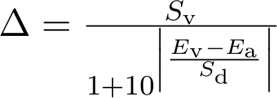
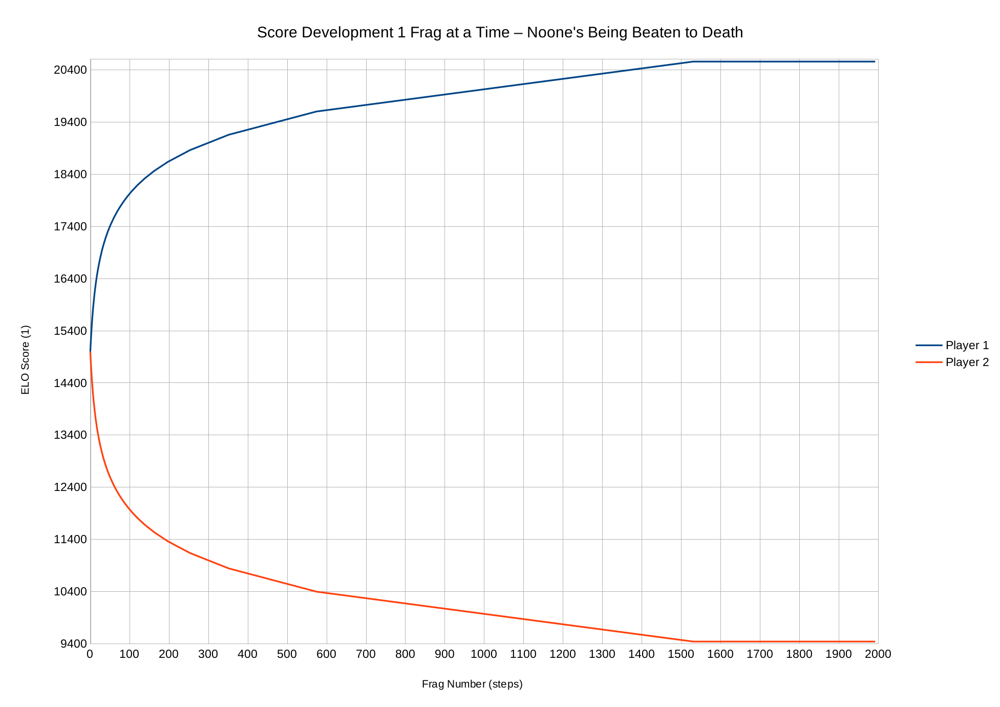
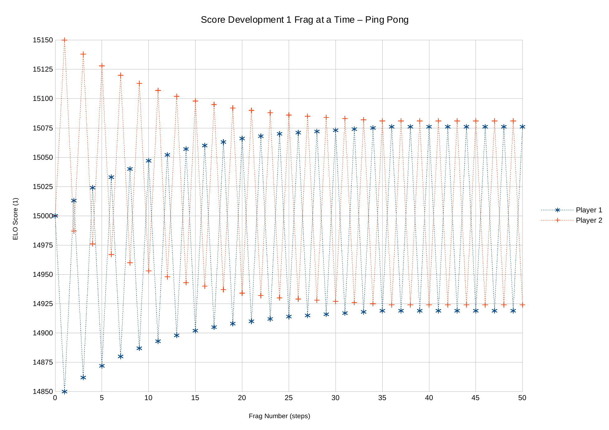
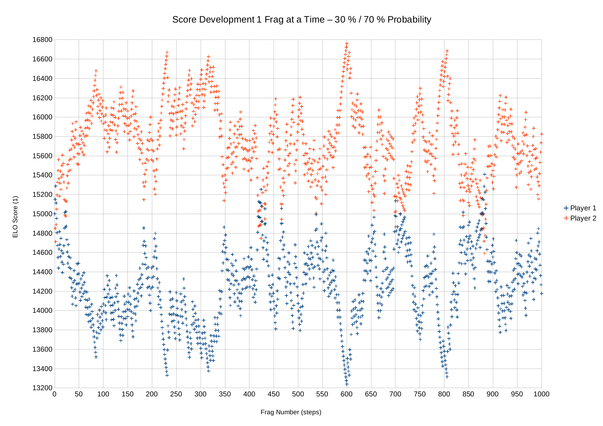
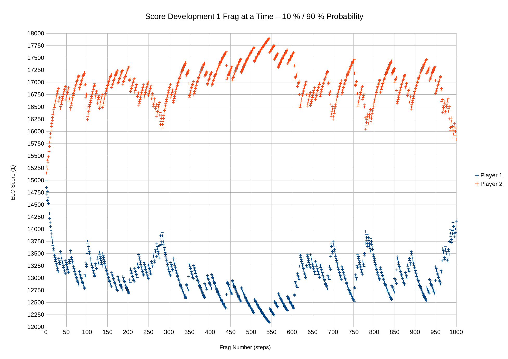
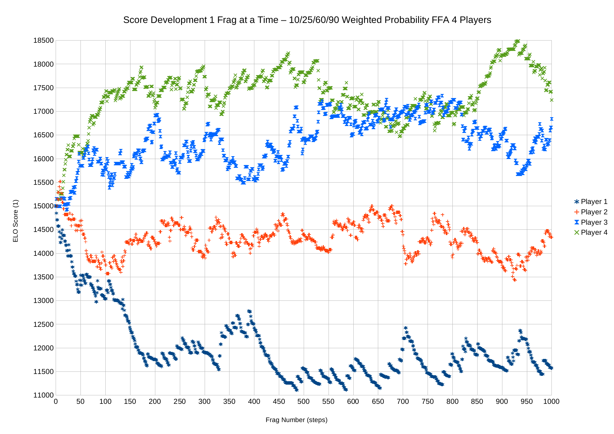
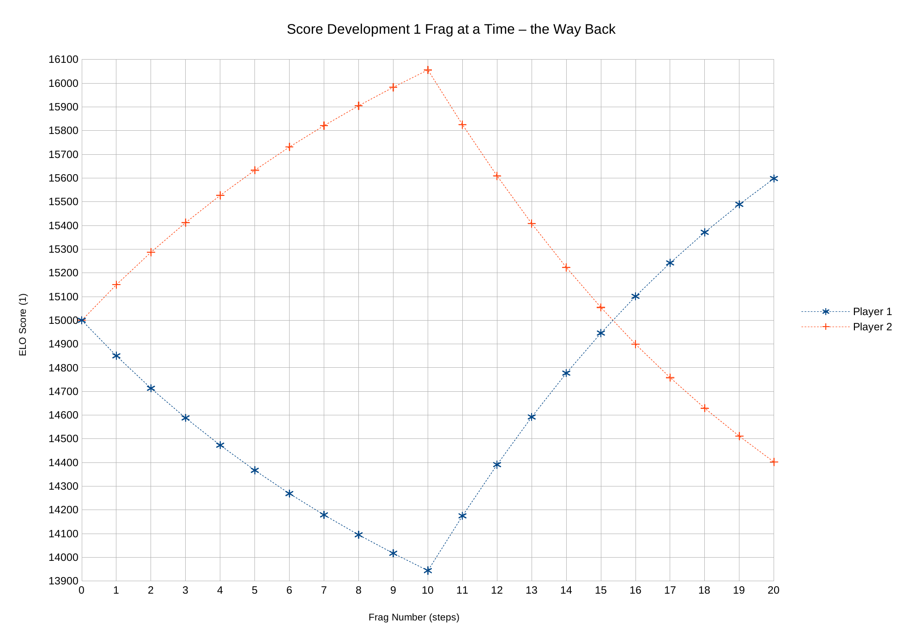
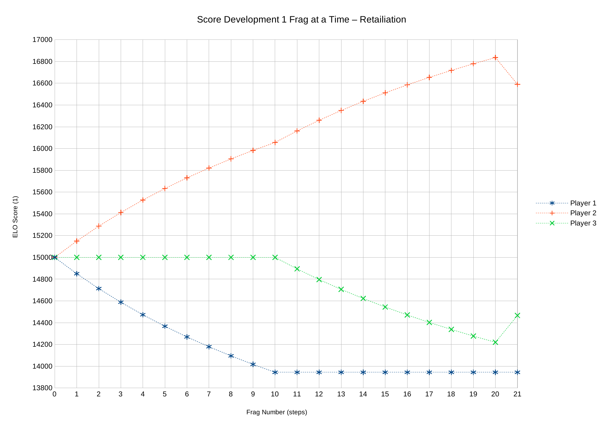
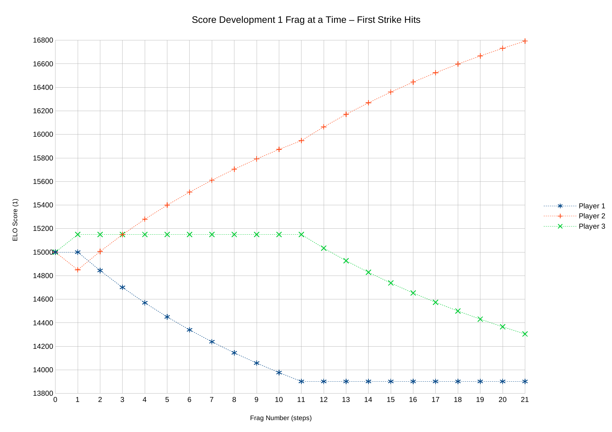
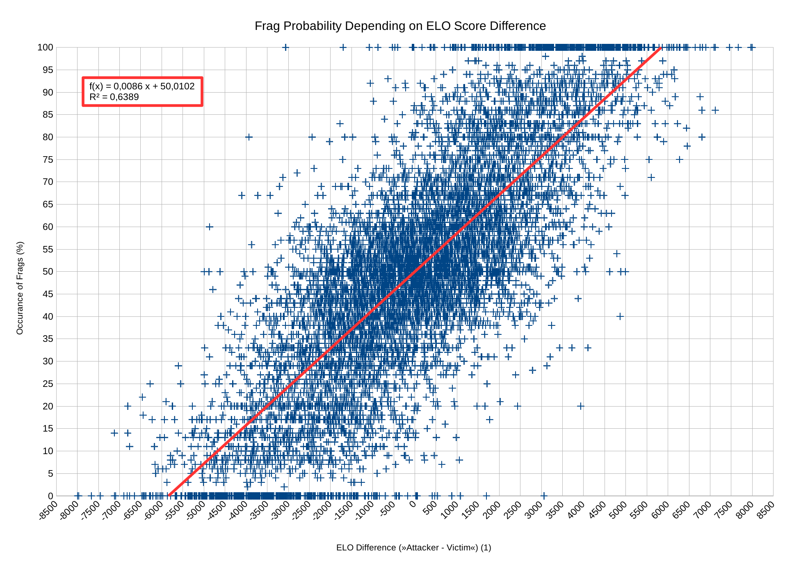

In 2000 the publisher Activision released Raven Software's first person shooter »Star Trek: Voyager Elite Force« (short: EF 1). The basis for this game was the Quake 3 Arena engine. So this is a first person shooter. It is featuring a single player campaign and multiplayer. The latter can be played competitively, of course. All competitive games seem to have one side effect: Players seeking some sort of ranking, indicating how well they handle themselves in the game against others.
By default, the game only has a score board turning up during to so-called intermission. That's the time between two maps playing. It only shows the results from the last match/map. As is very common with shooters, this score board sorts only by frags (=kills). The players with the highest amount of frags is placed first, the rest sorted by frags after him. Nowadays there are also games, that use the kills-deaths-ratio as a means for determining the players rank. Another way is the so-called efficiency (kills devided by the sum of kills and deaths, so to speak the efficiency of successfully resolving an encounter positively).
All the mentioned approaches to the matter of ranking or rating a players skill have one problem: They do not really take into account, how good or bad a player actually is, in comparison to other players. Any kill counts just as much as any other. This is specifically interesting, when bots come into play, which renders simple kill-counts as a means for rating human players against each other pretty much useless. Also the kills-deaths-ratio or efficiency are still strongly affected by players, that mount up a huge number of kills against for example bots or weaker players, while in turn those player's/bot's scores are wrecked in the same fashion.
This can even produce ridiculously high values, when the analysis is done including infinity values. One player killing 2 bots, never be killed and never be heard from again would have a proper K:D-ratio of infinity forever. Also a ratio of 100 % would be untoppable. Such a start is a problem. And it also implies another problem: Players with only very few frags that are placed very high but would not even remotely be ranked that good, if they played more rounds. They only benefit from a good start.
This always was a rather frustrating aspect for me. In other, more professional games this problem is also well known. The main question is: How to rank a player realisticly? If climbing up the ladder by winning against obviously inferior opponents is a safe bet, it will be done. Or to put it another way: Should an inferior player not be rewarded by a lot more rank-up for a win, than the other way around, the favored player when fragging him?
In chess and many other games there's the concept of the Elo score (named after its creator, Arpad Elo). It takes into consideration, that the probability of a player to win a match against a defined other player should also reflect on changes of his ranking/rating, not just the match result itself. So there are actually solutions, which are a lot better than the usual approaches.
This is the starting point and goal for this project: Create a ranking based on an Elo like score for EF 1. The basis for the actual data from which the score is derived, are the server log files of EF 1 servers. Every frag that is done (and also every death) is recorded in the log files. Those log entries are noted in a technical fashion, that can automatically be scanned for and analysed. And this is exactly what the EF Stats are supposed to be doing. They take the log file, analyse it and export the results in various available formats. This allows to use this data for example on a website and display a more or less accurate rating/ranking of players. It should run on the major platforms, Windows, Linux and MacOS. The choice here is C#, in form of a Mono project. It is not supposed to be a GUI tool. The target is more a server set up, where the log files are created and can be automatically analysed. In order to have compatibility with standard sort orders, K:D-ratios and efficiencies are also available and can be used for sorting.
EF Stats comes with a bunch of options. The minimal command line would look like this:
efstats.exe --inname filename (on Windows) and:
mono efstats.exe --inname filename (on Linux/MacOS/FreeBSD).
This runs the analysis on the given file, excluding bots, excluding certain default names and prints the results as HTML to STDOUT (prints it to the console), including nothing aside from that. The sort order of the resulting scores is by Elo value. Players with less than 100 recorded encounters are taken into analysis but not reported in that output file.
There is quite a number of options and parameters you can use on top of that, to influence contents and their presentation:
| Option/Parameter | Effect |
|---|---|
--debug | This prints additional information during stats analysis runs, useful for debugging. Warning: This can be quite extensive, depending on the size of the log file being analyzed. Do not use it in productive scenarios. |
--elodetails | Setting this switch makes EF Stats additionally print the Elo score dynamics (changes with every frag) to STDOUT. |
--eloreport | Setting this switch makes EF Stats additionally print an Elo score probability analysis to STDOUT. |
--help | Prints the help text and stops, regardless of the presence of other parameters or values. |
--inname | This defines the name of the input file containing the log data to be analyzed. This parameter is required. |
--minenc | This optional parameter defines the minimum number of encounters a player has to be part of (sum of fragging or being fragged) in order to be listed. Default is 100. This prevents players who just droped by for a few frags and were never heard from again from distorting results. Below a certain number of frags the scoring actually cannot be accurate enough for a reasonable ranking. |
--outformat | This optional parameter defines the output format. You can choose from text, csv, json and html. Default is html. Note: When choosing json, also the score history is exported, while the rest of the formats do not contain this data. This allows for showing the score graph of a particular player, e.g. on a website. |
--outname | This defines the name of the output file that will contain the analysis results. This parameter is optional. If it is not set, the data is written to STDOUT. Important: Existing files will be overwritten without asking! |
--rpe | The optional switch Report Parse Errors (=rpe) makes the analyzer report problems with the input log file. By default such problems are not reported. |
--sortorder | This optional parameter defines the value that is used for the ranking. You can choose from elo, ratio and eff (efficiency). Default is elo. |
--statssave | Use this parameter to provide a save file name. By default, this program analyses the data from the entire log file and writes the results to the output file (or STDOUT). If you require an analysis of a log file that is being continuously extended (e.g. the live log file of a running EF server) this filename is used to load the analysis results from the last analysis run, and continue where the last analysis run left off. After the analysis the save file will be updated with the now added new analysis data. If there exists no analysis file under this name already, it will be created after analysis and the log analysis starts from the beginning of the log file, first. If you use this feature, you really should consider setting g_logsync = 1 in your EF server's config. |
--verbose | The optional switch verbose makes EF Stats print some more information during the analysis run. |
--withbots | By default no bot players are included in the analysis. Setting this switch includes them. |
--withunnamed | By default no players with the nick names »Redshirt«, »RedShirt« or »UnnamedPlayer« are included in the analysis. Those are the standard nick names that the game uses when the player did not change his name. This means, various players use this nick, which will distort the results. Setting this switch includes them anyways. |
Up to now there is one problem known. When the error message The type initializer for 'Newtonsoft.Json.JsonWriter' threw an exception. appears, you need a newer version of Mono. If your Linux distribution does not provide it via their official pakage repositories, you can get it from the Mono development team directly.
EF Stats is going through the log file line by line. There are actually two kind of lines, that are of importance: Lines that report a nick name change or (after a connection) a new player's nick being registered. These lines give you step by step a mapping of nick names to slot ID values. These IDs are required for reading the other important log line type, the kill report. They can be occupied by another player later (being reused) but as long as no change of a slot happens, the slot will be occupied by the same player.
Kills on the other hand are not denoted reliably by only nick names and weapon strings. Luckily the logs also show the ID values of players and used weapons first. So by using the before mentioned ID mapping slot to nick name, you can accurately identify the player nicks. As the weapon IDs are static, the mapping is also constant. (Of course, identifying the actual player is not a simple matter, as everybody can choose whatever nickname is desired. So technically speacking, the EF Stats are actually rating nick names, not neccessarily physical players.)
When a new player (not known by the current analysis run) joins the server, he is assigned an Elo score of 15 000 and all values of that player are set to zero. For each log entry reporting a kill, both involved players kills or deaths are incremented (depending on whether the player was the attacker or the victim), their weapons usage and endurance updated and the Elo score difference calculated by the following formular:

The constant values for it are as follows: Sv = 300 (≙ value scale) and Sd = 4 000 (≙ difference scale). Along with the starting value of 15 000 for each new player, those were derived empirically. The scaling allowes for a detailed enough rating (many steps) as well as an adequate score penalties/gains for each kill. The Elo scores Ea (attacker Elo score) and Ev (victim Elo score) are taken from each player's existing data. Depending on whether the attacker was already the favored player, the difference (Δ - Sv) is added to the attacker, or if the victim was the favored player, the value Δ is added to the attacker. The victim get's the same value subtracted from his rating, as the attacker got added. There are never fractions added or subtracted. Scores are rounded to integer. This also means, that below a difference of 0.5 points, no difference will be applied, as a number smaller than 0.5 will be rounded to 0, equalling no change of score at all.
This formula explicitly requires the Elo scores of both players. So suicides are not actually meant to be applied in this fashion. As a matter of fact, these instances are depicted by the logs by an attacker with ID 1022, named <world>. On the long run, this pseudo player would drain all the Elo points from all players involved. So it is ignored with regards to Elo scores, but still counts as a death.
This formula has some implications:
You might think, »why make all that effort?« After all, good players will appear in the upper range, bad players will be placed low. So what can I actually expect from this Elo approach? In order to make this a bit more understandable, here are some examples.
If you consider the above mentioned scenario, that one player beats the other over and over again, there will be the point where the actual achievements of the losing player won't make a difference for a very long time, if usual K:D-ratios are applied for a ranking. Number example: Both players have 100 frags, all won by Player 1 against Player 2, except for one. This gives a K:D-ratio of 99:1 (99) for Player 1, and 1:99 (0.01) for Player 2. The efficiency would be 0.99 for Player 1 and 0.01 for Player 2. Imagine a third Player joining, getting fragged 99 times by Player 2 and 1 time the other way around. So Player 2 is equally better than Player 3 as Player 1 is in comparison to Player 2. The results for Player 3 would end the same way, ratio 0.01 and efficiency 0.01. Player 2 on the other hand would end up with 100 kills, 100 deaths, with an efficiency of 0.5 and a ratio of 1. Still, after winning 100 rounds, Player 2 is in absolute numbers so far behind Player 1, that it is very unlikely that he might ever catch up with him.
The elo score would slow that down a bit, up to the point, where no change is applied any longer. And that one win against Player 1 (or against Player 2 by Player 3) would increase the score a whole lot more, than normal ratio/efficiency calculations would do. That's actually a rather fair approach, as afterall, this success is certainly more significant, than the last win of Player 1 against Player 2, even be it only by some random chance. Or in other words, the king of the hill position has a risk of getting pulled down rather fast by other players, that are not that bad in comparison, giving a more realistic estimate of how good the player actually is.
If you have a look at a similar scenario, the Elo score penatly will cut off at some point:

After 1 530 consecutive frags, the penalty decreases to zero. This is due to the integer difference calculation. Once the penalty falls below 0.5, the resulting difference is zero. So essentially, rating-wise speaking, a player is not beaten to death. A vampirism-like score drain should not continue indefinitely in normal scenarios. You can also see the kinks in both curves at frags 575 and 352. This is when the corresponding values fall below 1.5 and 2.5, ending in penalties of -1 and -2.
An optimal rating system would accurately reflect the skill of a player by the given rating. This assumes, that there is such a thing. In reality, all player's performance may vary, depending on the situation on a particular day, on a particular map, with particular opponents or simply in a certain network situation. So the intrinsic skill is difficult to represent just by a single number. But a not too rough estimate of that intrinsic rating as a measure for skill can still be obtained, as the following graphs will show.
Imagine two players of exactly equal skill, playing a match, where every time one frags the other, during the next encounter the other player frags him back. The Elo score would behave in such a fashion:

In this case, both start off at the standard start value 15 000. Player 2 draws first blood, but after only a few frags, both players reach a semi stable situation, where their respective scores only oszillate around the start value. There is still a tiny difference of 5 points between them, which is a remnant effect of Player 2 hitting first. (See section Effects of Early Frags on the Eventual Score on the effect of early changes.) So score differences of 5 or less actually have no real meaning. But even the alternation of roughly 150 points each turn shows, a difference of 150 means not really much. It is not a random aspect, that this value is half of the value scale Sv. When looking at the formula, then both players having the same score leads to a difference of 150. If both players have the same rating, the difference is 150 points at first and this continues later on. So a difference of less than 150 points also does not really indicate a real skill difference.
Now let's change that scenario a bit. Let's say, Player 1 has a 30 % chance to frag Player 2. The following diagram shows a random simulation of exactly that assumption. 1 000 frags with that distribution gave this result:

As you can clearly see, the random aspect still makes it not always clear, which player is actually the better player. Around frag 425 there is even a situation, where the worse player seems to have a come back. But when looking at both graphs, they also have a clear tendency of alternating around an average value of round about 14 000 for Player 1 and 16 000 for Player 2. So a difference of roughly 1:2 in kill scores (here: 300 vs. 700) gives already a difference of 2 000 from each other. To make an even clearer example, here is the result of the same simulation, applying a 10 % vs. 90 % win chance:

Player 1 falls to about 13 000, while Player 2 rises up to around 17 000. That is already a difference of 4 000. Which is around the difference scale Sd. A frag likelyhood of 1:9 gives a score difference of the difference scale, which is significant. Also you can see, that the tendency to stay in the own range of each player is a lot greater than in the previous example. The variations seem to be a lot less. But even so, the scores range from approximately 18 000 to 16 000. So a variation of 2 000 seems to be quite normal, anyways.
Now the 1 on 1 examples might look a bit too artificial. Let's have a look at a similar scenario, that involves more than one pair or players. This simulation worked as follows: Any encounter of a player to another player is equally likely to occur. (You cannot really choose which player you will encounter next in reality either.) But the probability is derived by two random numbers, limited by a maximum value defined for each player. The player with the higher random number wins the encounter. The values for the four players were chosen as follows:
| Player | Maximum Random Number |
|---|---|
| Player 1 | 10 |
| Player 2 | 25 |
| Player 3 | 60 |
| Player 4 | 90 |

Interestingly, Player 1 (value 90) and Player 4 (value 10) seem to share a similarity in scores in comparison with the 10 %/90 % simulation: Player 1 ranges around 17 750, which is close to the 17 000 when only those two players are involved. Player 4 on the other hand ends up around 11 750, which again is not too far away from the previous 13 000. But apparently having a lot more of a chance again Players 2 and 3 already increases the value by about 1 000 points. And the other way around, having more of a competition, Player 4's score does not simply explode by more targets. This is exactly the desired effect: Losing against a very good player is not as much as a big deal for the score, than the other way around. An average player, that might loose any time against a good player still won't be reduced into oblivion, but has a strong chance of making a decent come back when playing also against less or similarly strong opponents. So the high skill of one player does not dominate all the other players that much, as they tend to stabilize each other and are also favored by penalty due to their under dog position. The fact, that Player 3 (value 60) in comparison to Player 2 (value 25) reaches a similar situation as Player 1 and 2 had in the previous 30 %/70 % scenario (similar difference) points into the direction, that an intrinsic value (here: the chosen numbers) is having an effect on the qualitative results. It seems to give a similar difference (14 700 to 16 200) as the 30 %/70 % example did before (14 000 vs. 16 000). So despite the obvious random influence, the effect of intrinsic skill values can clearly be seen. But the variance is quite high. So an absolute Elo score will only give an estimate of the actual skill, although it seems unlikely to vary significantly for a certain player.
As the unfavored player in a match is still a bit favored in terms of less penalty and more gain for a frag, there is one particular effect, that can strike especially strong in the very early history of a player:

In this graph you can clearly see, how the winner is gaining less and less points from fragging the nominally unfavored player. During the first 10 frags, the score of Player 1 is clearly being drained, but less and less, as he will be estimated less and less likely to win an encounter against this opponent. In the same fashion can you see, that an unfavored player get's a lot more gain than the favored player. This can lead to the shown come back effect: A player losing a lot in the beginning will eventually have an ever higher score than the formerly favoured player, even when both have an equal number of frags against each other. Therefore it is important, to not overestimate early successes or failures. As the other graphs before also show, before the first 150 to 200 frags happened, it is difficult to make a proper assessment of a player's rating. One side effect of this is also: If a player actually gains in experience and skill, he has it a lot more easy to also increase his Elo score on the expense of formerly (or still) better players. So the score is rather sensitive against actual skill changes. This is in strong contrast to the classic K:D ratio or efficiency, which might not change very much by themselves. And on top, might not change anything in ranking, as other's are simply too far away and the history of the player still kills off the effect of his current successes. So while the early results might have an effect that can easily be overestimated, the later results can also be of strong significance, if the player gains skill.
To investigate this specific aspect, that the time of a frag occuring can have a significant difference in score as a result, let's have a look the the following two frag series:

Here you can see the results of a simulated run: Player 2 wins 10 encounters against Player 1 and then another 10 against Player 3. And eventually Player 3 strikes back and frags Player 1 one time.

This is the opposite situation: Player 3 frags Player 2 one time, then Player 1 get's his 10 deaths and another 10 for Player 3. The results of both series' eventual scores are shown here:
| Rank | Player | Elo | Efficiency | Ratio | Score | Eliminated |
|---|---|---|---|---|---|---|
| 1 | Player 2 | 16 590 | 0.95 | 20.00 | 20 | 1 |
| 2 | Player 3 | 14 466 | 0.09 | 0.10 | 1 | 10 |
| 3 | Player 1 | 13 944 | 0.00 | 0.00 | 0 | 10 |
| Rank | Player | Elo | Efficiency | Ratio | Score | Eliminated |
|---|---|---|---|---|---|---|
| 1 | Player 2 | 16 793 | 0.95 | 20.00 | 20 | 1 |
| 2 | Player 3 | 14 305 | 0.09 | 0.10 | 1 | 10 |
| 3 | Player 1 | 13 902 | 0.00 | 0.00 | 0 | 10 |
When you compare the two tables, you see easily, that they differ not by much. Only the Elo score seems to vary. You can see here the effect, that great score differences make. That last kill in case 1 (late kill) packs a lot more punch, than when it happened very early on. So the order of frags can really make a significant difference. When you look at the other examples, you will also see, that this effect is strong, especially for the 10 %/90 % example. The increase of score for the less favored player is visibly higher than for the favoured player. This really shows, why the --minenc parameter may be important and why there is an initial filter for at least 100 frags for each player. It simply does not say much, if the player barely had any chance to show his real skill.
The underlying problem is, that we cannot give an estimate for the rating right from the start. In chess for example, you play some trial matches, just to see how well you are doing. And instead of slowly climbing up a ladder system, you are placed on a roughly fitting spot early on. As we do not know anything about a newly appearing nick name/player, we don't have that luxury. So one of the main weaknesses here is the generic starting value of 15 000. After a while it won't make a difference any more, but for early results it can make a significant difference, what happens there. After roughly 200 frags the true skill of a player gets rather evident. Below 100 it is actually to soon to make an assessment. So the question might be: Why is the default filter for player frags 100? Why not at least 200? That's a concession to the fact, that new players might lose interest quickly, if they play, and play, and never show up on the score board, as trying to reach 200 frags can take a while, depending on the server settings. Classic 20 frags map rounds in FFA take at least 10 maps to even appear in the ranking, assuming the new player won every round. That can be an entire EF evening, depending on played maps, number of players active and skill of the other players.
To be honest, it's still only a tendency. How a certain encounter of players during a match will end, always retains a random element. What health do both players have? Maybe one of them just caught the other pants down. What items do they carry? It's an up-hill battle to frag someone who is boosted by the quantum enhancer and has 200 shields and the Nano-regenerative shield. Are there any map advantages for either side? Sniping from far above is a lot more fun when you are the sniper...
But the Elo score is surely a way of estimating the skill of players, because on the average those random aspects should cancel each other out. The systematical tendencies (e.g. is the player able to make use of the map items, how well does he aim, is his movement good enough to not make an easy target of himself, does he know how to use the map layout and weapon peculiarities to his advantage, etc.) however, will essentially turn up as a different score value, the intrinsic value. But a single encounter can only be predicted with a bigger random aspect to it. Here is a graph showing the probability for a successfull frag in comparison to the Elo score difference of the involved players (just to give you an Idea what this means):

This graph's data is taken from an actual long time server log (approximately 9 000 encounters taken), including bots and unnamed players, but excluding difference occurances which happend less than 5 times. Not surprising, for two players of equal score the probability to win is 50:50, according to the derived linear function. But you can also see, that there is considerable variance from it present. The correlation coefficient of 0.639 clearly shows, that there is a big amount of deviation from that simple linear equation. But the tendency clearly is linear, with some artifacts around 0 %/100 %. For a rough estimate, the range around ±2 000 around the line seems to be a rather safe zone.
So when considering the magic number of the difference scale Sd (= 4 000) as a measure, then chances of success for both sides vary round about 85 % for the favored player but can stretch up to around 67 % to 100 %. When we compare that with the results from the 10 %/90 % tests, then it seems that the real data reduced to the formula seems to fit the simulation values. When you take the 30 %/70 % test, the Score difference calculated back via the formula gives you a score difference of roughly 2 300, which means for starting values of 15 000 the values 16 150 and 13 850. The estimates here seem to fit rather nicely to the simulated ones of 14 000 and 16 000.
So real players in a far more complex situation give similar results as the simulations, although they are a lot more noisy when plotted. So one can assume that the formula 0.0086 % x Score difference + 50 % is a rather good estimate of winning chances.
EF Stats comes with a license of its own but also uses the third party library Json.NET. If you want to know more about the latter, feel free to visit https://www.newtonsoft.com/json or https://github.com/JamesNK/Newtonsoft.Json. A big thanks goes out to James Newton-King and contributors. Your library really saves a lot of time, and this way makes nice other projects a lot more feasible! =)
A note on the intentions of the licensing: I (Martin Wohlauer, the first author on this projet) don't believe in limiting the use of a piece of software in a generalized manner. Most if not all problems with a certain use of a piece of software are in fact based in social problems. Be it a lack of distribution of wealth, preventing a decent living by the community for some. In my humble opinion, licensing fees are meant to prevent developers (the guys who do the actual work) from being taken advantage of. But are license-fees the only way to ensure their well-being? Be it the use for military purposes (nobody needs a war, but some do profit from it in our systems; don't let them get you into that kind of shittery. Software use for military purposes will be obsolet this way anyways!
Or other problems of that kind: It's not the software's fault, that people do crappy things to each other (or let others fall into dark pits or not helping them out of them). Everyone has a responsibility for what what he or she is doing, also with regards of the needs of the others. Actually there is enough for everybody's needs. But not for everybody's greed. Therefore a license should never be about accumulating huge amounts of wealth by means of a software product or preventing progress for others.
(I'm looking at you, Google, Amazon, Microsoft, Facebook, and all the other likes, that make Billions, pounding competitors with patent stuff into oblivion, while there are people starving in the countries that use your stuff. You do have enough and if others might do the job better than you with that knowledge and technology, then maybe you should work on some progress for yourself, instead of trying to prevent the progress of others.)
I believe that progress is only made when people cooperate and when individuals are allowed to create that progress freely. A healthy competition will help that progress pick up pace. That's always with the one limitation, to not hurt the others (or their basis for existing and thriving) in the process. No, dumping a lot of toxic waste may create progress for a while (mostly will it be progress on the bank account for single individuals...), but overall will most likely ensure a step backwards on a very basic matter, simple survival for the others. No, paying your workers a tiny wage may help your share holders to gain another million, but it's still not progress for the community.
So for a piece of software that creates progress (and be it a log analyzer of a game that's more than 20 years old by now) I don't want to limit further progress. And I don't want to prevent anyone to make a living on it, if that person contributes to the overall gain of society, either. But I do feel it is only fair, to at least mention the people who contributed to the basis for that progress. So the author(s) of this software should be mentioned at a not so hidden place within the project (like this read-me). It's like naming the guy how came up with a certain research result, just not as academic. ;-) Do it! If they helped you make progress, be so fair to name this fact. But aside from that, use the software, improve it, maybe even make money from it. Just as long as you are not getting in the way of the well-being of others by it.
The MIT License (MIT)
Copyright (c) 2007 James Newton-King
Permission is hereby granted, free of charge, to any person obtaining a copy of this software and associated documentation files (the "Software"), to deal in the Software without restriction, including without limitation the rights to use, copy, modify, merge, publish, distribute, sublicense, and/or sell copies of the Software, and to permit persons to whom the Software is furnished to do so, subject to the following conditions:
The above copyright notice and this permission notice shall be included in all copies or substantial portions of the Software.
THE SOFTWARE IS PROVIDED "AS IS", WITHOUT WARRANTY OF ANY KIND, EXPRESS OR IMPLIED, INCLUDING BUT NOT LIMITED TO THE WARRANTIES OF MERCHANTABILITY, FITNESS FOR A PARTICULAR PURPOSE AND NONINFRINGEMENT. IN NO EVENT SHALL THE AUTHORS OR COPYRIGHT HOLDERS BE LIABLE FOR ANY CLAIM, DAMAGES OR OTHER LIABILITY, WHETHER IN AN ACTION OF CONTRACT, TORT OR OTHERWISE, ARISING FROM, OUT OF OR IN CONNECTION WITH THE SOFTWARE OR THE USE OR OTHER DEALINGS IN THE SOFTWARE.
This software is released under the GNU Lesser General Public License version 3. It also covers this read-me and the graphics used within it (this file). The full text is provided below:
GNU LESSER GENERAL PUBLIC LICENSE
Version 3, 29 June 2007
Copyright (C) 2007 Free Software Foundation, Inc. <http://fsf.org/>
Everyone is permitted to copy and distribute verbatim copies of this license document, but changing it is not allowed.
This version of the GNU Lesser General Public License incorporates the terms and conditions of version 3 of the GNU General Public License, supplemented by the additional permissions listed below.
As used herein, “this License” refers to version 3 of the GNU Lesser General Public License, and the “GNU GPL” refers to version 3 of the GNU General Public License.
“The Library” refers to a covered work governed by this License, other than an Application or a Combined Work as defined below.
An “Application” is any work that makes use of an interface provided by the Library, but which is not otherwise based on the Library. Defining a subclass of a class defined by the Library is deemed a mode of using an interface provided by the Library.
A “Combined Work” is a work produced by combining or linking an Application with the Library. The particular version of the Library with which the Combined Work was made is also called the “Linked Version”.
The “Minimal Corresponding Source” for a Combined Work means the Corresponding Source for the Combined Work, excluding any source code for portions of the Combined Work that, considered in isolation, are based on the Application, and not on the Linked Version.
The “Corresponding Application Code” for a Combined Work means the object code and/or source code for the Application, including any data and utility programs needed for reproducing the Combined Work from the Application, but excluding the System Libraries of the Combined Work.
You may convey a covered work under sections 3 and 4 of this License without being bound by section 3 of the GNU GPL.
If you modify a copy of the Library, and, in your modifications, a facility refers to a function or data to be supplied by an Application that uses the facility (other than as an argument passed when the facility is invoked), then you may convey a copy of the modified version:
The object code form of an Application may incorporate material from a header file that is part of the Library. You may convey such object code under terms of your choice, provided that, if the incorporated material is not limited to numerical parameters, data structure layouts and accessors, or small macros, inline functions and templates (ten or fewer lines in length), you do both of the following:
You may convey a Combined Work under terms of your choice that, taken together, effectively do not restrict modification of the portions of the Library contained in the Combined Work and reverse engineering for debugging such modifications, if you also do each of the following:
You may place library facilities that are a work based on the Library side by side in a single library together with other library facilities that are not Applications and are not covered by this License, and convey such a combined library under terms of your choice, if you do both of the following:
The Free Software Foundation may publish revised and/or new versions of the GNU Lesser General Public License from time to time. Such new versions will be similar in spirit to the present version, but may differ in detail to address new problems or concerns.
Each version is given a distinguishing version number. If the Library as you received it specifies that a certain numbered version of the GNU Lesser General Public License “or any later version” applies to it, you have the option of following the terms and conditions either of that published version or of any later version published by the Free Software Foundation. If the Library as you received it does not specify a version number of the GNU Lesser General Public License, you may choose any version of the GNU Lesser General Public License ever published by the Free Software Foundation.
If the Library as you received it specifies that a proxy can decide whether future versions of the GNU Lesser General Public License shall apply, that proxy's public statement of acceptance of any version is permanent authorization for you to choose that version for the Library.